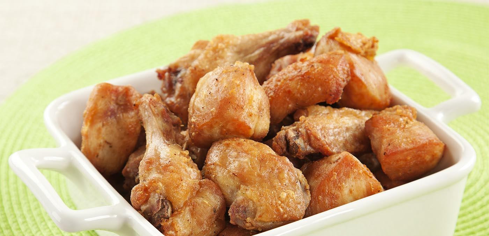
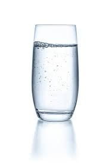
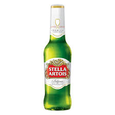
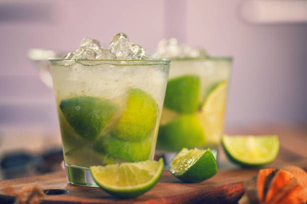
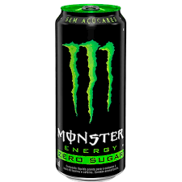

Cardápio de SEXTA 28/02
-

Frango a PassarinhoDeliciosos pedaços de frango temperados com alho, limão e especiarias, fritos até ficarem dourados e crocantes. Servido com molho especial para realçar o sabor, é a pedida perfeita para acompanhar uma gelada com a família!
-

Água da CasaA "Água da Casa" é uma água potável filtrada, proveniente do sistema de abastecimento local, servida gratuitamente aos clientes. É uma opção refrescante e econômica para acompanhar sua refeição, garantindo hidratação de qualidade sem custo adicional.
-

StellaUma Lager premium de origem belga, com sabor equilibrado e refrescante. Sua leveza, combinada com um toque suave de amargor, faz dela a escolha ideal para quem busca qualidade e tradição em cada gole. Perfeita para qualquer ocasião!
-

CaipirinhaA Caipirinha é o coquetel nacional do Brasil, tradicionalmente preparada com cachaça, limão, açúcar e gelo. No entanto, nossa casa oferece variações que permitem a escolha entre cachaça ou vodka, além de uma variedade de frutas frescas para personalizar sua bebida. Experimente combinações com morango, maracujá, kiwi, abacaxi, entre outras, todas elaboradas com maestria por nosso talentoso barman, garantindo uma experiência autêntica e inesquecível.
-

Energético MonstersA energia que você precisa para enfrentar o dia! Com uma mistura potente de cafeína, taurina e vitaminas, o Monster traz aquele boost de disposição e foco, com sabor refrescante e marcante. Ideal para quem busca performance e energia a qualquer hora!